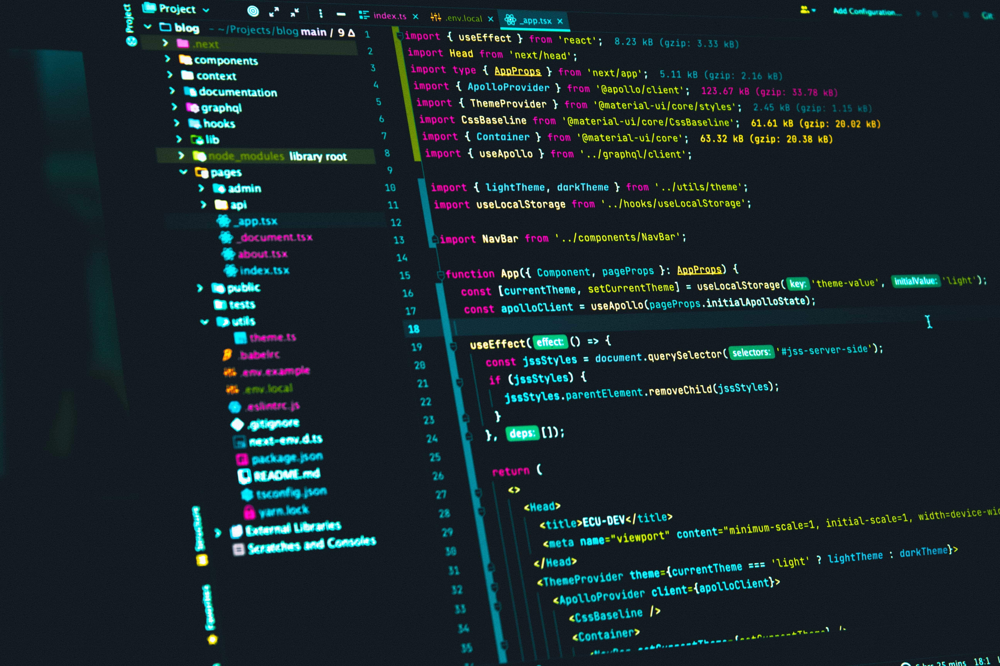

<!DOCTYPE html>
<html lang="en"></html>
<head>
    <meta charset="UTF-8">
    <meta http-equiv="X-UA-Compatible" content="IE=edge">
    <meta name="viewport" content="width=device-width, initial-scale=1.0, user-scalable=no">
    <title>Anderson</title>
    <link href='https://unpkg.com/boxicons@2.1.2/css/boxicons.min.css' rel='stylesheet'>
    <link rel="stylesheet" href="css/estilos.css">
</head>
<body>
    <!--presentacion-->
    <section id="inicio">
        <div class="contenido">
            <header>
                <div class="contenido-header">
                    <nav id="menu">
                        <ul id="links">
                            <li><a href="#inicio">Inicio</a></li>
                            <li><a href="#sobremi">Acerca de mi</a></li>
                            <li><a href="#habilidades">Habilidades</a></li>
                            <li><a href="#proyectos">Proyectos</a></li>
                            <li><a href="#contacto">Contacto</a></li>
                        </ul>
                    </nav>
                    <nav id="icon-nav" onclick="responsiveMenu()">
                        <i class='bx bx-menu'></i>
                    </nav>
                    
                </div>
            </header>
            <div class="presentacion">
                <h1>Soy Anderson Blanco Jaimes</h1>
                <h2>Desarrollador</h2>
            </div>
        </div>
    </section>
    <!--Informacion principal-->
    <main>
        <section id="sobremi">
            <div class="contenedor-img">
                
            </div>
            <div class="sobre-mi">
                <h2>Acerca de mi</h2>
                <p>
                    Estudiante de pregrado profesional de Ingeniería de sistemas en la Universidad Autónoma de Bucaramanga (UNAB). 
                    He desarrollado diferentes proyectos académicos con los que he adquirido conocimiento en el manejo de diferentes lenguajes de programación,
                    desarrollo de aplicaciones móviles, creación de videojuegos, manejo básico de Linux y manejo de base de datos SQL. 
                    Me considero una persona que busca nuevos desafíos para superar, soy una personas sociable, 
                    amable, empática que puedo trabajar de manera colaborativa. Buscando aportar lo mejor de mí a la organización en todo momento.
                </p>
                <a href="/docs/CV.pdf" target="_blank">Descargar CV</a>
            </div>
        </section>
        
        <section id="habilidades">
            <div class="titulo">
                <h2>Habilidades</h2>
            </div>
            <div class="contenedor-h">
                <div class="habilidad">
                    
                    <h3>html</h3>
                </div>
                <div class="habilidad">
                    
                    <h3>css</h3>
                </div>
                <div class="habilidad">
                    
                    <h3>javascript</h3>
                </div>
                <div class="habilidad">
                    
                    <h3>python</h3>
                </div>
            </div>
        </section>
        
        <section id="proyectos">
            <div class="titulo">
                <h2>Proyectos</h2>
            </div>
            <div class="contenedor-p">
                <div class="carta">
                    <figure>
                        
                    </figure>
                    <div class="contenido">
                        <h3>Proyecto 1</h3>
                        <p>descripcion y herraminetas</p>
                        <a href="#">Repositorio</a>
                    </div>
                </div>
                <!--
                <div class="carta">
                    <figure>
                        
                    </figure>
                    <div class="contenido">
                        <h3>Proyecto 2</h3>
                        <p>descripcion y herraminetas</p>
                        <a href="#">Repositorio</a>
                    </div>
                </div>
                <div class="carta">
                    <figure>
                        
                    </figure>
                    <div class="contenido">
                        <h3>Proyecto 3</h3>
                        <p>descripcion y herraminetas</p>
                        <a href="#">Repositorio</a>
                    </div>
                </div>
                <div class="carta">
                    <figure>
                        
                    </figure>
                    <div class="contenido">
                        <h3>Proyecto 4</h3>
                        <p>descripcion y herraminetas</p>
                        <a href="#">Repositorio</a>
                    </div>
                </div>
                -->
            </div>
        </section>

        <section id="contacto">
            <div class="titulo">
                <h2>Contacto</h2>
            </div>
            <div class="contenedor-c">
                <div class="contactar">
                    
                </div>
                <div class="contactar">
                    <a href="https://github.com/anderson729" target="_blank">
                        
                    </a>
                </div>
                <div class="contactar">
                    <a href="https://www.linkedin.com/in/andersonblanco/" target="_blank">
                        
                    </a>
                </div>
                <div class="contactar">
                    
                </div>
                <div class="contactar">
                    
                </div>
            </div>
        </section>
   </main>
   
   <footer>
        <p>Todos los derechos reservados, Anderson Fabian Blanco Jaimes - 2022</p>
   </footer>

   <script src="js/script.js"></script>
</body>
</html>
